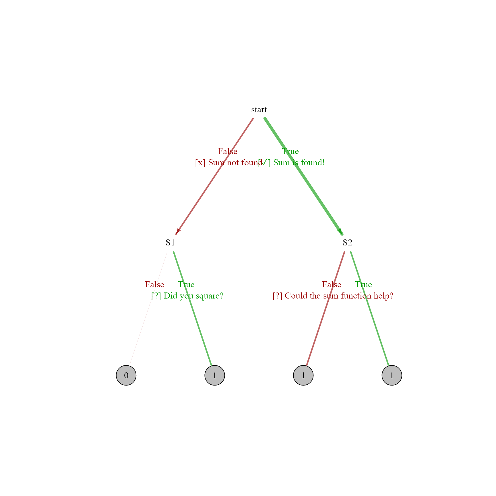

Analysing multiple scripts at once
important note evaluating submitted scripts requires their evaluation. I.e. the code will be run on the machine where the batch run is initiated. We encourage you to only run this code within a docker container or virtual machine. R code can be written that overwrites or deletes all your existing files or download malicious files from the web. Be extremely careful when running this code on your own machine. We take no responsibility for any damage to your machine.
As with the single run, we first define a net. We work with the same assignment as on the main page (write code that sums the squares of the number 1 up to 5).
library(VeRitas)
net <- list(start=node(has_val(ref$sol),
goT=S2,goF=S1,
doT="[✓] Sum is found!",
doF="[x] Sum not found"),
S1=node(has_val(ref$wrongsol),
goT=END,goF=END,
doT="[?] Did you square?"),
S2=node(did_call("sum","base"),
goT=END,goF=END,
doF="[?] Could the sum function help?")
)
MyAssignment <- prepareAssignment(net,"../examples/01-simplest/ref1.R")Now, with the prepared assignment, we can do a batch run. This finds all .R files in the supplied directory and then runs them through VeRitas.
batchout <- runBatch(dirname = "../examples/01-simplest/batch-run",
assignment = MyAssignment)#> The following files have been found:
#> code1.R
#> code2.R
#> code3.R
#>
#>
#> If you proceed - all these R files will be executed, with potentially harmful consequences to your computer. Are you certain you want to proceed? Proceeding is entirely at your own risk!
#>
#> Do you wish to run all these R files? (yes/no)We can now use extractFeedback to extract the feedback for each submission into a data frame:
allfeedback <- extractFeedback(batchout)
allfeedback
#> filename
#> 1 ../examples/01-simplest/batch-run/code1.R
#> 2 ../examples/01-simplest/batch-run/code2.R
#> 3 ../examples/01-simplest/batch-run/code3.R
#> feedback
#> 1 [x] Sum not found\n\n[?] Did you square?
#> 2 [✓] Sum is found!\n\n[?] Could the sum function help?
#> 3 [✓] Sum is found!We can also print specific feedback with the cat function:
cat(allfeedback$feedback[1])
#> [x] Sum not found
#>
#> [?] Did you square?Furthermore it is possible to draw an overview of how the scripts were run through the evaluation net using the analyseBatch function:
library(igraph)
#> Warning: package 'igraph' was built under R version 4.4.3
analyseBatch(batchout,draw="static",layout=layout_as_tree,margin=0.3,
size=30) Note that in this graph terminal nodes (end nodes) contain the number of scripts that they contain, while the thickness of the edges corresponds to the number of scripts that have flowed through that edge. To obtain the scripts that were at any specific terminal node, use extractScripts:
extractScripts(batchout, "S1")
#> [1] "../examples/01-simplest/batch-run/code1.R"Unfortunately it is currently not possible to extract scripts from end nodes. We are working on this functionality. For now, a workaround would be to simply add an additional dummy node before the end, which one can track.
In Rstudio, it is then possible to load such a script using rstudios api directly. For example to load the first script that is obtained with the code on line 67, use:
script <- extractScripts(batchout,"S1")
rstudioapi::documentOpen(script[1])This allows for efficient checking of code, and as a teacher one can, this way relatively easily design new feedback rules.